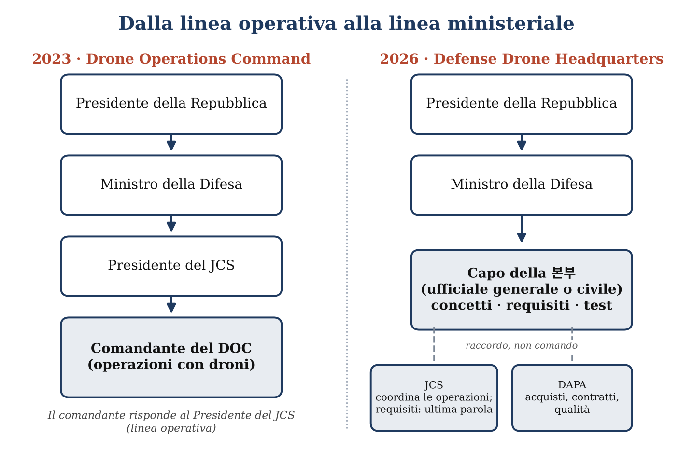

DYNAMES
DYNAMES1. Introduzione: quando un organo operativo diventa un organo di politica
È consentito ad un ordinamento mutare la natura di un organo militare, sottraendolo alla linea del comando operativo per ricondurlo a quella ministeriale, senza intervenire sulla legge che ripartisce i poteri sulle forze armate? E, se lo è, a chi vanno imputate le decisioni che tale organo concorre a determinare quando esse si traducono nell’impiego della forza?
Tali interrogativi, che a prima vista sembrano riguardare la sola organizzazione amministrativa, divengono sostanziali con il decreto presidenziale (대통령령) n. 36765, promulgato il 20 ottobre 2026 ed in vigore dal 1° novembre 2026. Il decreto è un atto di rango secondario, adottato dal Presidente della Repubblica su delega della legge o per darle esecuzione, e riordina l’impiego militare dei droni1.
Il 2 novembre il Ministero della Difesa ha celebrato a Pocheon l’istituzione della 국방드론본부, resa dalla stampa anglofona ora come Defense Drone Headquarters, ora come Defense Drone Agency2. L’organo subentra al Drone Operations Command (드론작전사령부, DOC), istituito nel settembre 2023 dopo l’incursione di droni nordcoreani del dicembre 2022 e soppresso dopo circa tre anni3.
L’organico scende da circa 280 a circa 100 unità; la quota di ufficiali superiori (영관급, dal grado di maggiore a quello di colonnello) sale da circa il 17% a oltre la metà del personale4.
Il vertice annunciato è il maggior generale (소장) Kim Deuk-bong, già comandante del DOC. Secondo la stampa, nelle more delle ordinarie nomine degli ufficiali generali, le funzioni sono esercitate dall’ex comandante del comando soppresso5.
Il mutamento di denominazione, da 사령부 («comando») a 본부 («quartier generale», «direzione»), non è di per sé probante, perché lo stesso termine designa anche lo Stato maggiore congiunto (합동참모본부, Joint Chiefs of Staff, JCS), che è invece organo di comando operativo. Il dato giuridicamente rilevante è la disciplina che l’atto istitutivo dà all’organo, ed è su quella che si concentra l’analisi.
La collocazione di un organo lungo la catena di comando operativa, vale a dire la linea gerarchica attraverso cui l’ordine di impiegare la forza discende dal vertice politico fino alle unità, non è una questione di mera organizzazione: ne dipendono tre assetti giuridici distinti.
Il primo riguarda l’imputazione interna delle decisioni, perché il soggetto che risponde di un atto, sul piano amministrativo e disciplinare, è quello cui la struttura gerarchica lo riconduce. Il secondo riguarda il controllo civile, che si esercita sulla forza armata attraverso i rapporti di subordinazione tra i suoi organi e l’autorità politica.
Il terzo riguarda la responsabilità del comandante nel diritto internazionale umanitario: gli artt. 86 e 87 del I Protocollo addizionale alle Convenzioni di Ginevra gravano sul superiore in grado di esercitare comando o controllo sui subordinati, e presuppongono perciò un anello della catena cui quel potere sia effettivamente riferibile. Se l’organo che definisce i concetti d’impiego dei droni, ne pianifica i requisiti operativi e ne sperimenta le capacità esce da quella linea, tutti e tre gli assetti vanno riconsiderati.
Quando l’organo che definisce i concetti d’impiego dei droni, ne pianifica i requisiti operativi e ne sperimenta le capacità esce da quella linea, tutti e tre gli effetti vanno riconsiderati.
La giustificazione ufficiale è di natura funzionale. Secondo un alto funzionario del Ministero, i droni sono «una seconda arma individuale» di ogni soldato e non possono più restare prerogativa di un solo comando6.
La politica del 26 giugno 2026 prevede, infatti, l’acquisizione, entro il 2030, di oltre 20.000 droni a basso costo, tra ricognitori a corto raggio e piccoli droni suicidi. Prevede l’entrata in servizio del K-LUCAS, un munizionamento circuitante a lungo raggio (loitering munition: arma che stazione sull’area dell’obiettivo prima di colpirlo, distruggendosi nell’impatto). Prevede infine la formazione di 500.000 «guerrieri-drone», formula che designa l’addestramento dell’intero personale e non l’acquisto di altrettanti velivoli7.
La tesi è che la riforma non si risolva in una redistribuzione di reparti, ma sposti il baricentro della materia dalla logica del comando a quella della politica pubblica. Il raffronto testuale tra i due decreti presidenziali succedutisi, il n. 33568 del 2023 e il n. 36765 del 2026, lo mostra su tre punti. L’organo non conduce più operazioni, dipende dal Ministro della Difesa e non dal Presidente del JCS, e può essere guidato da un funzionario civile.

2. Il quadro giuridico della riforma
2.1. Comando operativo e amministrazione militare nella 국군조직법
Il diritto militare sudcoreano distingue due linee di potere sulle forze armate: il comando operativo (군령, gunryeong), che attiene all’impiego delle forze nelle operazioni, e l’amministrazione militare (군정, gunjeong), che riguarda ordinamento, personale, risorse e sviluppo delle capacità.
La 국군조직법 (Legge sull’organizzazione delle Forze armate) non definisce i due concetti: impiega 군령 in più disposizioni (artt. 9, comma 2, e 13, comma 1) e non ricorre mai a 군정 in tutto il suo testo. La distinzione è quindi frutto di elaborazione dottrinale e di prassi, e i suoi confini sono controversi. Il testo, nella versione vigente (legge n. 10821 del 2011, in vigore dal 15 ottobre 2011, ultima modifica), disegna una catena precisa. Il Presidente della Repubblica esercita il comando supremo nei modi stabiliti dalla Costituzione e dalla legge (art. 6; Cost., art. 74, comma 1)8.
Il Ministro della Difesa, «ricevuto l’ordine del Presidente», sovrintende alle questioni militari e dirige e sorveglia sia il Presidente del JCS sia i capi di stato maggiore delle singole forze armate (art. 8). Il JCS è incardinato nel Ministero ed esercita la direzione operativa delle unità di combattimento e la condotta delle operazioni congiunte e combinate (art. 2, comma 2).
Il suo Presidente assiste il Ministro in materia di 군령 e, su ordine di questi, dirige e sorveglia le unità operative delle forze armate e le unità congiunte (art. 9, comma 2).
L’ordinamento prevede, tuttavia, una "valvola". L’art. 2, comma 3, consente che, «quando necessario per ragioni militari», con decreto presidenziale siano istituite unità congiunte e altri organi necessari «sotto la direzione e la sorveglianza del Ministro della Difesa».
La norma distingue due categorie: le unità congiunte (합동부대) e «gli altri organi necessari» (그 밖에 필요한 기관). Le unità congiunte indicate dal regolamento previsto dall’art. 9, comma 3, sono quelle che il Presidente del JCS dirige e sorveglia ai sensi dell’art. 9, comma 2; per gli altri organi la legge non prevede tale rapporto.
È la disposizione che l’art. 1 del decreto del 2026 pone espressamente a fondamento dell’istituzione dell’organo «alle dipendenze» (소속) del Ministro, e permette di leggere la riforma come operazione interna al quadro legislativo vigente: per collocare un organo alle dipendenze dirette del Ministro, anziché del Presidente del JCS, non occorre modificare la legge. La nuova Headquarters, che il decreto istituisce «alle dipendenze» del Ministro e che non figura più nell’elenco delle unità congiunte, sembra collocarsi nella seconda categoria.
2.2. Il raffronto testuale tra il decreto del 2023 e quello del 2026
Il decreto n. 36765 è una revisione integrale (전부개정) del precedente9. L’atto riscrive il testo che disciplinava il DOC (decreto n. 33568 del 27 giugno 2023, in vigore dal 1° settembre 2023), che le disposizioni finali richiamano come «previgente» (종전의 드론작전사령부령), e ne muta la denominazione.10 Il raffronto tra i due testi è lo strumento più diretto per misurare la portata del mutamento.
| Profilo | Decreto 2023 (DOC) | Decreto 2026 (본부) |
|---|---|---|
| Funzione (art. 1) | Operazioni con forze-drone e relativo supporto | Istituzione «alle dipendenze» del Ministro ai sensi dell’art. 2, comma 3, della 국군조직법, per la promozione dell’impiego dei droni nella difesa e il miglioramento della capacità di risposta alle minacce drone |
| Missioni (art. 2) | Pianificazione ed esecuzione di operazioni (contrasto ai velivoli nemici, sorveglianza e ricognizione, attacco, guerra psicologica, guerra elettronica); sviluppo del combattimento | Supporto allo sviluppo di concetti e alla definizione degli indirizzi di politica; pianificazione e supporto allo sviluppo delle forze; dimostrazione sul campo (실증) dell’utilizzabilità militare dei sistemi, limitata alla politica drone e contro-drone; cooperazione tra settore privato, amministrazioni e forze armate (민·관·군); compiti analoghi che il Ministro ritenga necessari (n. 5) |
| Dipendenza gerarchica | Il comandante riceve ordini dal Presidente del JCS (art. 5) | Il capo riceve ordini dal Ministro della Difesa e dirige il personale dell’organo (art. 4) |
| Vertice | Ufficiale generale; capo di stato maggiore ufficiale generale o ufficiale superiore (art. 4) | Ufficiale generale o funzionario civile del Ministero (군무원) di grado 2 o superiore; capo di stato maggiore ufficiale superiore (art. 3) |
| Poteri operativi | Zona di competenza fissata dal JCS (art. 3); direttive urgenti a unità non subordinate (art. 8) | Non compaiono: l’art. 4 attribuisce al capo la direzione dei soli affari e del solo personale dell’organo; organizzazione interna e organico sono rimessi al Ministro (artt. 5-6) |
Dalla condotta al supporto. Il vecchio art. 2 attribuiva al DOC la pianificazione e l’esecuzione di operazioni; il nuovo elenca concetti, pianificazione e supporto, sperimentazione e cooperazione. Nelle cinque missioni non compare alcun verbo di comando né alcun potere di impartire direttive a unità esterne. È il dato testuale su cui poggia la lettura ministeriale, secondo la quale l’organo non conduce più le operazioni.
Dal JCS al Ministro. Il comandante del DOC rispondeva al Presidente del JCS e, dunque, alla linea operativa; il capo del nuovo organo risponde al Ministro. La conseguenza è duplice: l’organo esce dalla catena operativa e il suo ancoraggio diventa politico-amministrativo. Restano al JCS il coordinamento delle operazioni delle forze armate e, secondo la stampa, l’autorità finale sui requisiti operativi11.
Un vertice che può essere civile. L’art. 3, comma 2, consente di affidare l’organo a un funzionario civile di grado 2 o superiore (군무원, personale civile alle dipendenze del Ministero della Difesa). È una facoltà testuale e non una scelta già compiuta: il vertice annunciato è un ufficiale generale. Il prossimo turno di nomine generalizie sarà la prima verifica concreta dell’uso che l’amministrazione intende farne.
Una clausola di chiusura. L’art. 2, n. 5, abilita il Ministro ad assegnare all’organo ulteriori compiti affini a quelli dei nn. 1-4, quando li ritenga necessari per rafforzare la capacità nel settore della politica drone e contro-drone. La formula circoscrive la delega alla stessa materia, ma rimette a un atto ministeriale, e non a una modifica del decreto, l’eventuale ampliamento delle missioni.
Un’attuazione affidata al Ministro. Il decreto non fissa né l’organizzazione interna né l’organico. L’art. 5 rimette al Ministro la disciplina delle strutture di staff e degli organi posti alle dipendenze del capo, e l’art. 6 la determinazione dell’organico di militari e civili.
Il dato di circa 100 unità, riferito dalla stampa, deriva dunque da atti ministeriali e non dal decreto. L’art. 17 della 국군조직법 consente inoltre di non pubblicare gli atti emanati in base alla legge che siano ritenuti necessari per il segreto militare: tali atti potrebbero perciò non essere accessibili.
Continuità formale, discontinuità operativa. Le disposizioni finali indicano insieme il punto di rottura e di continuità. L’art. 3, comma 1, elimina il DOC (n. 4-3, inserito dal decreto del 2023) dall’elenco delle unità congiunte contenuto nell’art. 3 del regolamento previsto dall’art. 9, comma 3, della 국군조직법: l’organo esce così dalle unità che il Presidente del JCS dirige e sorveglia, e dunque dalla linea operativa.
Restano nell’elenco, tra gli altri, il Comando operazioni cyber e il Comando strategico.
Gli artt. 3, commi 2 e 3, sostituiscono, invece, la denominazione del comandante del DOC con quella del capo della nuova Headquarters nel decreto di attuazione della 국방개혁에 관한 법률 (Legge sulla riforma della difesa) e in quello della 군인사법 (Legge sul personale militare). La prima sostituzione ha un contenuto preciso. L’art. 19, comma 1, del decreto di attuazione della legge sulla riforma della difesa dispone, in applicazione dell’art. 30 della legge, che i comandanti delle unità e degli organi ivi elencati siano avvicendati tra le forze armate e che un ufficiale della stessa forza non possa ricoprire lo stesso incarico per più di due volte consecutive, salvo eccezioni giustificate dalla specializzazione dell’incarico e dalle esigenze di gestione del personale. Il comandante del DOC vi era stato inserito, come n. 21, nel 2023; vi figura ora il capo della nuova Headquarters.
Il comma 2 aggiunge che, negli organi diretti da un ufficiale generale e nelle unità congiunte, comandante e vice (in mancanza, capo di stato maggiore) appartengano a forze armate diverse e che uno dei due sia dell’Esercito. Non è stato verificato se la Headquarters rientri tra gli organi cui il comma 2 si riferisce (국방부 직할부대 및 기관, unità e organi direttamente dipendenti dal Ministero): l’organigramma del Ministero consultato, riferito a ottobre 2026, è anteriore all’entrata in funzione dell’organo e non riporta le unità direttamente dipendenti12.
Il distacco riguarda dunque la linea operativa e non il regime ordinamentale del vertice, che resta assoggettato alla rotazione interforze. Resta una questione aperta. La disciplina dell’art. 19 è costruita per ufficiali («ufficiale della stessa forza armata»); se il capo fosse un funzionario civile, come l’art. 3, comma 2, del decreto consente, il testo consultato non chiarisce come si raccordi la regola della rotazione. È una lettura dell’autrice.
3. Pluralità di competenze e imputazione della responsabilità
3.1. Cinque soggetti, nessun centro unico
La riforma sposta competenze senza concentrarle: né i requisiti né gli acquisti passano al nuovo organo, che opera in una rete di cinque soggetti.
| Soggetto | Ruolo dopo la riforma |
|---|---|
| Defense Drone Headquarters (Ministero della Difesa) | Sviluppo di concetti, pianificazione e supporto allo sviluppo delle forze, dimostrazioni sul campo, cooperazione 민·관·군 (decreto); secondo Ministero e stampa, anche pianificazione dei requisiti e supporto a test e certificazione; circa 100 persone |
| Forze armate | Ricevono le missioni operative già del DOC (ricognizione, attacco): Esercito, Marina (Marines compresi) e Aeronautica (decreto, disposizioni finali, art. 2) |
| Joint Chiefs of Staff (JCS, Stato maggiore congiunto) | Coordina e integra le operazioni delle forze armate; conserva l’autorità finale sui requisiti operativi |
| DAPA (Defense Acquisition Program Administration, 방위사업청, agenzia per i programmi di acquisizione della difesa) | Resta responsabile di acquisti, contratti e qualità, compresi i droni suicidi e il programma K-LUCAS |
| Gruppo di promozione della strategia nazionale su droni e contro-droni (Presidenza del Consiglio) | Coordina l’attuazione della strategia del 4 giugno 2026; circa 20 persone provenienti dall’Ufficio per il coordinamento delle politiche di governo, dal Ministero della Difesa, dal Ministero dei Trasporti, dalla DAPA e dalla Defense Agency for Technology and Quality |
Quanto alle forze armate destinatarie, il testo del decreto è chiaro.
L’art. 2 delle disposizioni finali autorizza il Ministro, prima dell’entrata in vigore, a trasferire le missioni già previste dall’art. 2, n. 1, del decreto del 2023 all’Esercito, alla Marina (Marines compresi) e all’Aeronautica. Le divergenze della stampa sono più apparenti che reali: il Korea Times, il Korea Herald e altre testate parlano di Esercito, Aeronautica e Marines, il Korea JoongAng Daily di Esercito, Marina e Aeronautica. I Marines sono un corpo della Marina (국군조직법, art. 2, comma 1), per cui le due formule descrivono lo stesso trasferimento13.
Secondo la stampa, il JCS assume il comando e controllo integrati delle funzioni trasferite14.
Le critiche principali sono due. La prima riguarda la sovrapposizione con la DAPA, già competente per i droni suicidi e per il K-LUCAS (Korea JoongAng Daily); il Ministero replica che il nuovo organo deve occuparsi di concetti operativi che il sistema di acquisizione fatica a trattare, coordinare i requisiti tra le forze e promuovere l’uso militare delle tecnologie civili. La seconda, riferita dal Segye Ilbo, è che la dispersione della funzione operativa tra le forze armate possa indebolire la regia complessiva, accentuare le differenze di capacità e ridurre l’efficacia delle operazioni congiunte.15
3.2. Responsabilità internazionale dello Stato e responsabilità del comandante
Sul piano dell’illecito internazionale la ripartizione interna delle competenze è giuridicamente neutra. Ai sensi dell’art. 4 del Progetto di articoli della Commissione del diritto internazionale sulla responsabilità dello Stato per fatti internazionalmente illeciti (ARSIWA, 2001), la condotta di qualsiasi organo dello Stato è attribuita allo Stato, quali che siano le funzioni esercitate e la posizione occupata nell’organizzazione statale. L’art. 3 precisa che la qualificazione di un fatto come internazionalmente illecito non è influenzata dalla qualificazione che ne dà il diritto interno16. Se un drone sudcoreano colpisse un obiettivo illegittimo, la questione internazionale sarebbe l’attribuibilità del fatto alla Repubblica di Corea, e lo sarebbe a prescindere da quale soggetto, tra Ministero, JCS, forze armate o DAPA, abbia deciso, acquistato o certificato il sistema.
Il discorso muta sul piano interno e su quello della responsabilità individuale. Il I Protocollo addizionale alle Convenzioni di Ginevra, di cui la Corea del Sud è parte dal 15 gennaio 198217, impone agli Stati di esigere che i comandanti impediscano, reprimano e denuncino le violazioni commesse da chi è sotto il loro comando o controllo (art. 87), e fonda la responsabilità del superiore che sapeva, o disponeva di informazioni che gli avrebbero permesso di concludere, che un subordinato commetteva o stava per commettere una violazione, e non ha adottato tutte le misure possibili per impedirla (art. 86, par. 2).
Entrambe le norme presuppongono la possibilità di individuare un superiore in grado di esercitare un controllo effettivo.18
Quando requisiti (JCS), acquisto e qualità (DAPA), concetti e sperimentazione (il nuovo organo), impiego (le forze armate) e governance generale (Presidenza del Consiglio) fanno capo a soggetti diversi, non esiste un solo punto in cui confluiscano conoscenza e potere di intervento. Ciò non preclude il funzionamento del sistema, ma l’individuazione del soggetto che, in un caso concreto, «sapeva o avrebbe dovuto sapere» di un difetto di progetto, di un limite d’impiego o di un rischio per i civili richiederà una documentazione e una comunicazione tra i soggetti più accurate di quelle necessarie con un comando unico.
È un’interpretazione dell’assetto descritto e non un fatto riferito dalle fonti. Un riferimento utile è l’art. 82 dello stesso Protocollo, che impone di rendere disponibili consulenti giuridici per i comandanti al livello appropriato: la scelta di dove collocarli nella catena è parte della risposta alla frammentazione.
3.3. Il livello governativo
Resta un secondo livello, civile, su cui la riforma interviene senza assorbirlo. Il 2 novembre è stato costituito anche il gruppo di promozione presso la Presidenza del Consiglio, con il compito di sorvegliare l’attuazione della strategia nazionale del 4 giugno 2026.
Tra i dieci compiti della strategia figurano la definizione della governance e di organi di raccordo, un sistema integrato di standard e certificazione, l’espansione della domanda pubblica mediante acquisti integrati e la creazione di un polo civile-militare19.
I due percorsi, quello della difesa e quello dell’intero governo, hanno partecipanti in comune (Ministero della Difesa e DAPA): il loro coordinamento sarà una verifica tanto della riforma quanto del sistema che essa intende innovare.
4. Legittimità e controllo civile: l’eredità del Drone Operations Command
4.1. Due ricostruzioni a confronto
La riforma si presta a due letture che non coincidono. Per il Ministero si tratta di uno «sviluppo evolutivo» (진화적 발전) volto a estendere la capacità drone a tutte le forze armate; il comunicato del 2 novembre non richiama alcun episodio passato. Per buona parte della stampa coreana e internazionale, invece, il DOC era un organo controverso fin dall’origine. Secondo il Kyunghyang Shinmun, istituito nel 2023 durante l’amministrazione Yoon, fu realizzato in fretta e senza adeguata preparazione, con sovrapposizioni di compiti rispetto alle forze armate e inefficienze nell’impiego del personale. Il suo coinvolgimento nell’operazione dei droni su Pyongyang dell’ottobre 2024 ha poi alimentato il dibattito sulla stessa esistenza del comando; nelle indagini connesse alla proclamazione della legge marziale del 3 dicembre 2024 si è discusso se l’incursione fosse finalizzata a provocare una reazione militare di Pyongyang. Nel gennaio 2026 un comitato consultivo speciale civile-militare ha raccomandato la soppressione del comando20. Il quotidiano Asharq Al-Awsat riferisce che il governo Lee ha smantellato il comando a seguito di tali accuse21. La soluzione adottata è di compromesso: l’organo sopravvive, ma privato dell’operatività. Il Korea Times la descrive come la sostituzione di un comando con un’agenzia più piccola, concentrata su sviluppo e acquisizione22. Anche il procedimento ha rilievo: il Ministero ha reso pubbliche le modifiche normative il 24 luglio, il Consiglio dei ministri le ha approvate il 13 ottobre e il decreto è stato promulgato il 20 ottobre, secondo l’iter ordinario del decreto presidenziale.23
4.2. Il dibattito sul 군령권 e il parametro costituzionale
La riforma si colloca in una discussione più ampia sul rapporto tra Ministro e JCS.
Da un lato, un editoriale dell’ex colonnello Choi Chun-sik, pubblicato dal NewDaily il 30 giugno 2026, accusa il Ministero di invadere la competenza del JCS in violazione della Costituzione e della 국군조직법: sostiene che l’art. 9 attribuisca al Presidente del JCS il comando e la sorveglianza operativa delle unità di combattimento e che il Ministro abbia funzioni di indirizzo e di amministrazione. Richiamando la distinzione di Samuel Huntington tra controllo civile «oggettivo» e «soggettivo», l’autore include tra gli esempi di ingerenza anche la proposta di sciogliere il comando droni24. Dall’altro, un editoriale di Park Chang-sik del 22 ottobre 2025 difende la collocazione del 군령권 presso il Ministro civile, in risposta a una proposta di trasferirlo al Presidente del JCS, attribuita a un deputato del Partito del Potere Popolare e non ancora presentata a quella data, e richiama il modello della supremazia civile e il precedente giapponese del comando autonomo dello stato maggiore25.
Il parametro costituzionale è netto sul principio e meno sul riparto. Il Presidente è comandante supremo delle forze armate (art. 74, comma 1). Nessun militare in servizio attivo può essere nominato Primo ministro (art. 86, comma 3) né membro del Consiglio di Stato (art. 87, comma 4), organo di cui fa parte il Ministro della Difesa. Rientrano tra le materie da deliberare in Consiglio di Stato gli «affari militari importanti» (art. 89, n. 6)26.
La Costituzione non indica però dove passi il confine tra 군령 e 군정, né se un organo di sviluppo delle capacità debba collocarsi nella linea dell’una o dell’altra. A tali questioni risponde la 국군조직법 e, in particolare, l’art. 2, comma 3, che lascia al decreto presidenziale un margine ampio. La riforma sui droni è un caso in cui quel margine viene utilizzato.
5. Acquisizione rapida, certificazione e verifica giuridica delle nuove armi
Il nuovo organo nasce per accelerare l’ingresso in servizio di droni a basso costo. È la rapidità stessa a sollevare i problemi giuridici più delicati, mentre le prove del 2026 mostrano una tecnologia non ancora matura.
5.1. Il piano e gli strumenti
La politica del 26 giugno prevede l’acquisizione rapida di oltre 20.000 droni a basso costo (ricognizione a corto raggio e piccoli droni suicidi), l’entrata in servizio del K-LUCAS e sistemi a sciame dotati di intelligenza artificiale. Per ridurre i tempi, Seoul introduce una certificazione ispirata al programma statunitense Blue UAS (elenco di droni commerciali verificati e ammessi all’acquisto da parte dell’amministrazione della difesa): i droni commerciali conformi agli standard militari potranno essere certificati in anticipo e acquistati più rapidamente27.
Il Ministero lavora, inoltre, ad una norma dedicata. Un funzionario individua nelle procedure della legge sugli acquisti della difesa la causa dei ritardi nell’introduzione di droni e intelligenza artificiale e osserva che i droni a perdere richiedono un approccio diverso da quello delle armi convenzionali. Il testo di tale legge non risulta disponibile nelle fonti consultate, e la sua formulazione deciderà se la certificazione resti un supporto tecnico o divenga il vero centro del controllo normativo28. Il nuovo organo sosterrà, secondo Ministero e stampa, test e certificazione, mentre i contratti restano alla DAPA. Il testo del decreto, tuttavia, non menziona né la certificazione né l’acquisizione: l’art. 2, n. 3, prevede soltanto la dimostrazione sul campo (실증) dell’utilizzabilità militare dei sistemi, limitata alla politica drone e contro-drone. Il ruolo di certificazione dovrà fondarsi sulla c.d. clausola di chiusura dell’art. 2, n. 5, su atti ministeriali o sulla legge in preparazione; è una lettura dell’autrice.
Il programma mira anche ad escludere le componenti di origine cinese, in linea con il modello Blue UAS, e a rafforzare la produzione nazionale di batterie, motori e apparati di trasmissione dati, con catene di approvvigionamento condivise con gli alleati, Stati Uniti compresi.
Il Korea JoongAng Daily osserva che la Cina detiene oltre metà del mercato mondiale dei droni civili e che sviluppare alternative nazionali resta la sfida maggiore.29
5.2. Le prove del 2026
Il 25 agosto un drone suicida lanciato dalla nave Marado è caduto in mare pochi secondi dopo il decollo; il secondo tentativo ha avuto lo stesso esito. L’Agency for Defense Development ha attribuito entrambi i fallimenti al disallineamento del tubo di lancio, aggiungendo che il drone e il resto del sistema avevano funzionato regolarmente. A settembre, durante una dimostrazione tecnologica a Pocheon, sei prove su diciassette hanno incontrato problemi, tra cui cadute subito dopo il decollo e sistemi che non sono riusciti a volare. Un docente della Konkuk University collega la mancata esportazione di droni militari sudcoreani alla limitata validazione operativa dei sistemi nazionali30. Come si è detto, tali eventi sono posteriori alla decisione di riformare e rappresentano la prima verifica della scommessa sulla rapidità.
5.3. L’art. 36 del I Protocollo addizionale
Il comunicato del 2 novembre prevede di integrare tecnologie di AI e di autonomia nello sviluppo di sistemi di combattimento senza equipaggio. Una certificazione accelerata di munizionamento circuitante e di droni a perdere con funzioni autonome pone il tema dell’obbligo di verifica giuridica delle nuove armi, che l’art. 36 del I Protocollo addizionale, di cui la Corea del Sud è parte, pone a carico di ciascuno Stato: nello studio, sviluppo, acquisizione o adozione di una nuova arma, di un nuovo mezzo o metodo di guerra, lo Stato deve accertare se il suo impiego sia vietato, in tutte o in alcune circostanze, dal Protocollo o da altra norma di diritto internazionale ad esso applicabile31.
La norma non prescrive una procedura né un organo: ogni Stato la attua nel proprio ordinamento. Un drone commerciale certificato per la conformità a standard di sicurezza e di approvvigionamento non ha, per ciò solo, superato un esame di liceità; la certificazione di un prodotto non coincide con la valutazione del suo impiego.
Nessuna delle cinque missioni dell’art. 2 menziona un compito di revisione giuridica delle armi, e la sua collocazione nella catena (organo, DAPA, JCS) resta una questione aperta. L’osservazione è tratta dal testo del decreto; la conclusione che ne deriva è una lettura dell’autrice. In un sistema che accorcia i tempi la scelta è decisiva: se la verifica ex art. 36 rimane a valle della certificazione, rischia di ridursi a un adempimento formale; se è integrata a monte nei requisiti e nei test, può accompagnare la rapidità anziché frenarla.
6. Considerazioni conclusive e indicatori da osservare
La riforma risponde a due esigenze distinte: i) portare i droni in tutte le forze armate, e farlo in tempi rapidi; ii) sottrarre l’operatività a un organo istituito nel 2023 e divenuto controverso dal 2024. Il raffronto tra i due decreti mostra che questa seconda esigenza non è un’attribuzione della stampa, ma un dato testuale: si legge nella dipendenza diretta dal Ministro (art. 4), nell’assenza di funzioni di comando tra le missioni (art. 2) e nella facoltà di affidare l’organo a un vertice civile (art. 3, comma 2).
Il prezzo di questa scelta è la frammentazione. Secondo il Ministero e la stampa, i requisiti operativi restano al JCS e gli acquisti alla DAPA; l’impiego spetta alle forze armate; i concetti e le prove di impiego al nuovo organo; la governance generale alla Presidenza del Consiglio. Sul piano della responsabilità internazionale dello Stato questa ripartizione è irrilevante, perché l’attribuzione prescinde dall’organo che ha agito. Sul piano del comando e della verifica giuridica delle armi, invece, ogni passaggio tra soggetti è un punto in cui informazione e potere di intervento possono separarsi. Gli insuccessi dei test di agosto e settembre mostrano, infine, che la sfida tecnologica resta aperta.
Gli indicatori da osservare nei prossimi mesi sono cinque:
gli atti ministeriali attuativi del decreto (organizzazione interna e organico, artt. 5-6) e l’eventuale uso della clausola dell’art. 2, n. 5, per assegnare all’organo nuovi compiti (§ 2.2);
la prima nomina del vertice, ufficiale generale o funzionario civile, nel prossimo turno di nomine generalizie, e la forza armata di appartenenza alla luce della rotazione interforze (§§ 2.2 e 4.3);
il contenuto del disegno di legge sull’acquisizione rapida e la collocazione della verifica giuridica delle armi (§ 5);
i rapporti operativi tra il nuovo organo, la DAPA e il JCS nei primi cicli di acquisto, insieme al coordinamento con il gruppo di promozione presso la Presidenza del Consiglio (§ 3);
gli esiti dei test del 2027 e lo schieramento degli apparati contro-drone commerciali (§ 5).
La riforma sposta i droni dalla logica del comando a quella della politica pubblica. Se l’esito sarà maggiore efficienza e non maggiore opacità, lo dirà l’uso dello strumento e non il decreto.
Bibliografia e fonti
1. Trattati e strumenti internazionali
Protocollo addizionale I alle Convenzioni di Ginevra del 12 agosto 1949, relativo alla protezione delle vittime dei conflitti armati internazionali, 8 giugno 1977, artt. 36, 82, 86 e 87, ICRC, IHL Databases.
Commissione del diritto internazionale, Draft Articles on Responsibility of States for Internationally Wrongful Acts, 2001, artt. 3 e 4, legal.un.org.
2. Fonti normative sudcoreane
국방드론본부령 (Decreto sulla 국방드론본부), decreto presidenziale n. 36765, revisione integrale, in vigore dal 1° novembre 2026, testo integrale con disposizioni finali, law.go.kr.
드론작전사령부령 (Decreto sul Comando Operazioni Droni), decreto presidenziale n. 33568, 27 giugno 2023, law.go.kr.
국군조직법 (Legge sull’organizzazione delle Forze armate), artt. 2, 6, 8 e 9, law.go.kr (testo vigente, legge n. 10821 del 2011).
국방개혁에 관한 법률 시행령 (Decreto di attuazione della legge sulla riforma della difesa), art. 19, testo vigente su law.go.kr.
국군조직법 제9조제3항에 따른 전투를 주임무로 하는 각 군의 작전부대 등에 관한 규정 (Regolamento sulle unità operative delle forze armate), art. 3, con le modifiche del 2023 e del 2026, testo su law.go.kr.
Costituzione della Repubblica di Corea, artt. 74, 75, 86, 87 e 89, elaw.klri.re.kr.
3. Documenti ufficiali e governativi
Ministero della Difesa (국방부), comunicato sull’istituzione della 국방드론본부, 2 novembre 2026, korea.kr.
Ministero della Difesa (국방부), politica sui droni e sui sistemi contro-drone, 26 giugno 2026, korea.kr.
Ministero della Difesa (국방부), comunicato sul decreto del 2023, korea.kr.
4. Dottrina e studi
Y. Sandoz, C. Swinarski, B. Zimmermann (a cura di), Commentary on the Additional Protocols of 8 June 1977 to the Geneva Conventions of 12 August 1949, ICRC / Martinus Nijhoff, Ginevra, 1987.
ICRC, A Guide to the Legal Review of New Weapons, Means and Methods of Warfare: Measures to Implement Article 36 of Additional Protocol I of 1977, Ginevra, 2006.
International Review of the Red Cross, «Ratification of the Protocols by the Republic of Korea», cambridge.org.
5. Stampa coreana
Kyunghyang Shinmun (경향신문), 2 novembre 2026, khan.co.kr.
Newstomato, «드론작전사 3년만 해체…‘국방드론본부’ 출범», newstomato.com.
Korea Times, 2 novembre 2026, koreatimes.co.kr; 26 giugno 2026, koreatimes.co.kr.
Korea Herald, 2 novembre 2026, koreaherald.com.
Korea JoongAng Daily, 2 novembre 2026, koreajoongangdaily.com.
Segye Ilbo (세계일보), 2 novembre 2026, segye.com.
Sidae Ilbo, 2 novembre 2026, sidae.com.
Supple, «내란 연루 드론작전사 해체하고…‘국방드론본부’ 창설», supple.kr.
News2day, 2 novembre 2026, news2day.co.kr.
Newspim, 2 novembre 2026, newspim.com.
Money Today (머니투데이), 26 giugno 2026, mt.co.kr.
Daily Environment (일간환경), 5 novembre 2026, dailyt.co.kr.
«美 ‘블루 UAS’ 본뜬 인증·도입체계 구축…간부 비중 높여 실무 역량 강화», koreancenter.or.kr.
Choi Chun-sik (최춘식), NewDaily, 30 giugno 2026 (editoriale), newdaily.co.kr.
Park Chang-sik (박창식), Newstomato, 22 ottobre 2025 (editoriale), newstomato.com.
6. Stampa internazionale
Asharq Al-Awsat, 26 giugno 2026, english.aawsat.com.
Defence24, 3 novembre 2026, defence24.com.
Defensehere, 2 novembre 2026, defensehere.com.
Decreto n. 36765 (국방드론본부령), in vigore dal 1° novembre 2026, testo su law.go.kr; sulla nozione di 대통령령, Costituzione della Repubblica di Corea, art. 75, elaw.klri.re.kr.↩︎
Ministero della Difesa (국방부), comunicato del 2 novembre 2026, korea.kr; Korea Times, «Korea swaps drone command for smaller agency focused on development, procurement», 2 novembre 2026, koreatimes.co.kr.↩︎
Kyunghyang Shinmun (경향신문), articolo del 2 novembre 2026, khan.co.kr.↩︎
Ibidem; Korea JoongAng Daily, «Seoul launches drone agency, plans phaseout of Chinese parts», 2 novembre 2026, koreajoongangdaily.com.↩︎
Ibidem; Newstomato, «드론작전사 3년만 해체…‘국방드론본부’ 출범», newstomato.com.↩︎
Korea JoongAng Daily, 2 novembre 2026, cit.↩︎
Ministero della Difesa (국방부), politica sui droni e sui sistemi contro-drone, 26 giugno 2026, korea.kr; Korea Times, «Korea launches joint drone headquarters», 26 giugno 2026, koreatimes.co.kr.↩︎
국군조직법 (Legge sull’organizzazione delle Forze armate), artt. 2, 6, 8 e 9, nel testo vigente pubblicato su law.go.kr (시행 2011.10.15, legge n. 10821 del 14 luglio 2011, ultima modifica). Costituzione della Repubblica di Corea, art. 74, comma 1, in elaw.klri.re.kr.↩︎
국방드론본부령 (Decreto sulla 국방드론본부), decreto presidenziale n. 36765, 20 ottobre 2026, revisione integrale, in vigore dal 1° novembre 2026, testo su law.go.kr.↩︎
드론작전사령부령 (Decreto sul Comando Operazioni Droni), decreto presidenziale n. 33568, 27 giugno 2023, law.go.kr; Ministero della Difesa, comunicato sul decreto del 2023, korea.kr.↩︎
Kyunghyang Shinmun, 2 novembre 2026, cit.; Newstomato, cit.↩︎
Decreto n. 36765, disposizioni finali (부칙), art. 3; 국방개혁에 관한 법률 시행령 (Decreto di attuazione della legge sulla riforma della difesa), art. 19, commi 1 e 2, nel testo vigente su law.go.kr, con la cronologia che registra l’inserimento del n. 21 nel 2023 e la sua modifica nel 2026; regolamento sulle unità operative delle forze armate di cui all’art. 9, comma 3, della 국군조직법, art. 3, nel testo vigente su law.go.kr, con le modifiche del 2023 e del 2026. Il contenuto dell’art. 13, comma 1, n. 2, lett. a), del decreto di attuazione della 군인사법, anch’esso modificato nella sola denominazione, non è stato qui verificato.↩︎
Decreto n. 36765, disposizioni finali, art. 2; 국군조직법, art. 2, comma 1; per la stampa, Korea Times, 2 novembre 2026, cit.; Korea Herald, 2 novembre 2026, koreaherald.com; Korea JoongAng Daily, 2 novembre 2026, cit.; Sidae Ilbo, 2 novembre 2026, sidae.com.↩︎
Supple, «내란 연루 드론작전사 해체하고…‘국방드론본부’ 창설», supple.kr. La notizia non figura nel testo del decreto.↩︎
Commissione del diritto internazionale, Draft Articles on Responsibility of States for Internationally Wrongful Acts, 2001, artt. 3 e 4, con commentario, legal.un.org.↩︎
Ratifica dei Protocolli addizionali I e II da parte della Repubblica di Corea: strumento datato 28 dicembre 1981 e depositato presso il Governo svizzero il 15 gennaio 1982, in International Review of the Red Cross, cambridge.org. La fonte consultata non riporta riserve o dichiarazioni.↩︎
Protocollo addizionale I alle Convenzioni di Ginevra del 12 agosto 1949, 8 giugno 1977, artt. 86 e 87, ihl-databases.icrc.org; Y. Sandoz, C. Swinarski, B. Zimmermann (a cura di), Commentary on the Additional Protocols of 8 June 1977, ICRC, Ginevra, 1987.↩︎
Ministero della Difesa (국방부), politica del 26 giugno 2026, cit.; Korea Times, 26 giugno 2026, cit.; Money Today (머니투데이), 26 giugno 2026, mt.co.kr; Daily Environment (일간환경), 5 novembre 2026, dailyt.co.kr.↩︎
Kyunghyang Shinmun, 2 novembre 2026, cit. Le indagini e le ipotesi richiamate sono riportate dalla fonte come oggetto di discussione e non come accertamenti giudiziari; nessuna di queste circostanze è qui affermata come fatto accertato.↩︎
Asharq Al-Awsat, 26 giugno 2026, english.aawsat.com.↩︎
Korea Times, 2 novembre 2026, cit.↩︎
News2day, 2 novembre 2026, news2day.co.kr.↩︎
Choi Chun-sik (최춘식), «합참 군사지휘권 강탈!», NewDaily, 30 giugno 2026, newdaily.co.kr. Si tratta di un editoriale d’opinione e non di un’analisi neutra né di una pronuncia giudiziaria; nel testo non risultano repliche del Ministero.↩︎
Park Chang-sik (박창식), rubrica «K-국방», Newstomato, 22 ottobre 2025, newstomato.com. Anche questa fonte è un’opinione di parte; l’autore non indica fonti primarie sul modello statunitense, per cui il passaggio non è utilizzato come dato.↩︎
Costituzione della Repubblica di Corea, artt. 74, comma 1, 86, comma 3, 87, comma 4, e 89, n. 6, elaw.klri.re.kr.↩︎
«美 ‘블루 UAS’ 본뜬 인증·도입체계 구축…간부 비중 높여 실무 역량 강화», koreancenter.or.kr; Korea JoongAng Daily, 2 novembre 2026, cit.↩︎
Korea Times, 2 novembre 2026, cit.; Newspim, 2 novembre 2026, newspim.com.↩︎
Korea JoongAng Daily, 2 novembre 2026, cit.↩︎
Korea JoongAng Daily, 2 novembre 2026, cit.; Defence24, 3 novembre 2026, defence24.com; Defensehere, 2 novembre 2026, defensehere.com.↩︎
Protocollo addizionale I, art. 36, ihl-databases.icrc.org; ICRC, A Guide to the Legal Review of New Weapons, Means and Methods of Warfare: Measures to Implement Article 36 of Additional Protocol I of 1977, Ginevra, 2006; Ministero della Difesa, comunicato del 2 novembre 2026, cit.↩︎